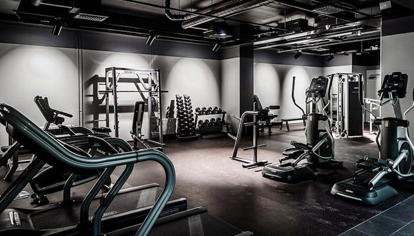
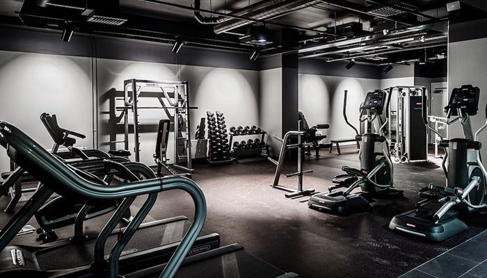

Hobilerim
Fotball:
Pek çok spor yapıyorum, en önemlisi futbol.Küçüklüğümden beri okul takımında oynuyordum ve sürekli arkadaşlarımla oynuyordum ama
oynadığım maçların birinde sakatlandım, Ondan sonra bıraktım ama filistine gidince bazen oynuyorum arkadaşlarımla.
Bilgisaya Oyunları:
Bilgisayar oyunları oynamayı çok seviyorum. Küçüklüğümden beri zamanımı bu oyunlara ayırıyorum ama biraz fanatiğim.Beş yıl önce bir oyun oynarken çok
sinirlenirdim ve yanlışlıkla bilgisayarı kırardım. Artık günümde yeterli zamanım olmadığından biraz bilgisayar oyunu oynuyorum.
Spor Salonu:
Türkiye'ye geldiğimde spor salonunu sevmeye başladım. Bu spor hayatımda ve günlük rutinimde vazgeçilmez bir şey haline geldi ve
ulaşmak istediğim bazı hedeflerim var.

 
